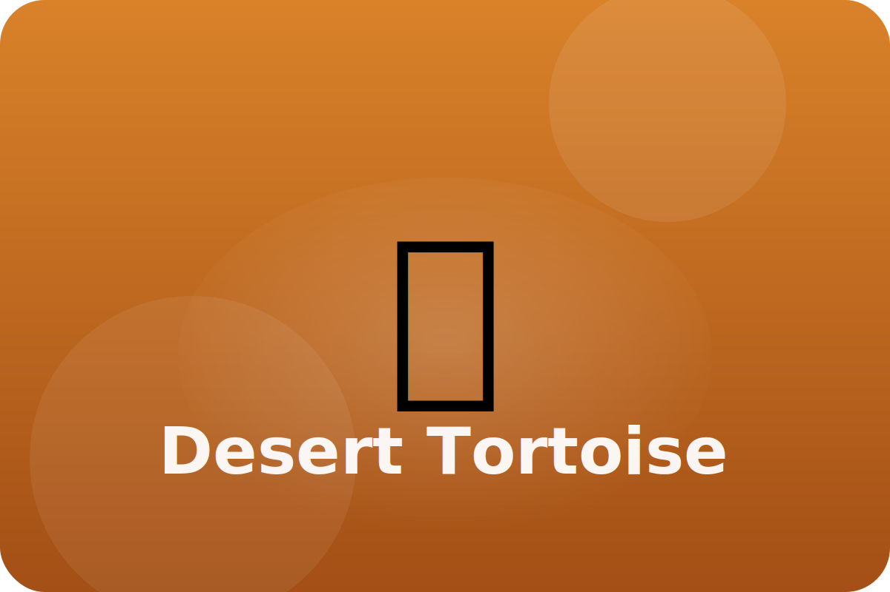

Desert
Shell home for life
Desert tortoises dig burrows and store water in their bodies. They munch on cactus and flowers after rare rains.
Water Storage
Tortoises can hold extra water in their bladder and use it during dry times.
Strong Shell
A domed shell protects them from coyotes and hot sun.
Burrow Builder
Powerful legs dig long tunnels that stay cooler than the outside air.
Keep exploring the Desert Tortoise
Watch the Desert Tortoise in action
Desert tortoise videos for kids